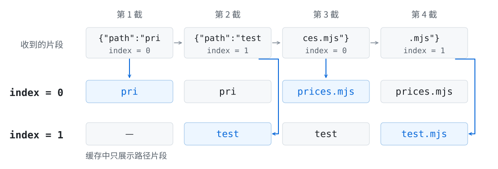
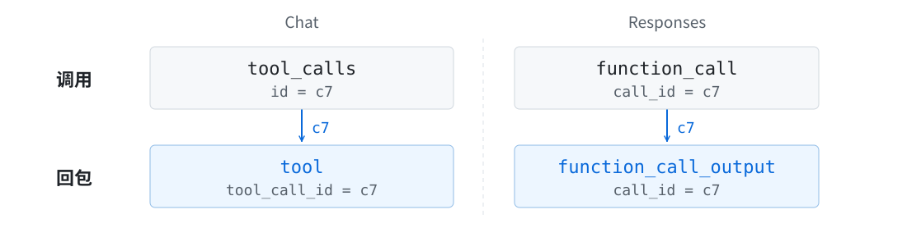

工具参数分段到达，什么时候能执行？
pri 后面来了 test。顺手把它俩接起来，就得到 pritest。可这两截文件名来自两次 Read。等 ces.mjs 和 .mjs 也到了，程序凭什么把它们拼回两份读取请求？
参数片段按位置拼接
按源码推演一次 Chat 接口的回复。四截 function.arguments 依次是位置 0 的 {"path":"pri、位置 1 的 {"path":"test、位置 0 的 ces.mjs"}、位置 1 的 .mjs"}。每截都带着 index，也就是它在这次响应中的调用位置。

留意下面的 acc["args"] += arguments。这一行能接对后半截，全靠前面的 setdefault 按 index 取出同一份缓存。
raw_index = frag.get("index")
index = raw_index if isinstance(raw_index, int) else 0
acc = self.tool_acc.setdefault(
index, {"id": "", "name": "", "args": ""})
frag_id = frag.get("id")
if isinstance(frag_id, str) and frag_id:
acc["id"] = frag_id # 保留之前取得的有效 ID。
function = frag.get("function")
if isinstance(function, dict):
name = function.get("name")
if isinstance(name, str):
acc["name"] += name
arguments = function.get("arguments")
if isinstance(arguments, str):
acc["args"] += arguments第三截到了，setdefault 取回位置 0 的 {"path":"pri，+= 接上 ces.mjs"}，这个位置就有了 {"path":"prices.mjs"}。位置 1 此时仍是 {"path":"test，要等第四截才成为 {"path":"test.mjs"}。如果直接赋值，位置 0 最后只会剩下 ces.mjs"}。如果两次 Read 共用一份缓存，第二截就会接进第一份参数，两个完整路径都拼不回来。
function.name 也可以追加。位置 0 刚收到工具名时，客户端已经能发出 tool_call 提示，界面可以先显示 Read。调用的 id 则单独记下，留给结果配对。下次模型请求照样能用位置 0 拼一份新参数。
从字节读出 SSE 事件
拼接器用到的调用位置和参数片段，得先从 HTTP 上的 SSE（Server-Sent Events）事件里读出来。网络交给程序的是一块块字节，换成中文文件名时，连一个字都可能分两次到。比如“价”的 UTF-8 编码是 E4 BB B7。前一块只到 E4 BB，若存的增量解码器会把这两个字节留住。下一块补来 B7 才交出“价”。读到流末还凑不齐这个字，严格解码就会报错。
字符拼好了，事件的边界还得确定。流还在继续时，即使第一条 data: 已经读到行尾，程序仍要等空行才能把这个事件交出去。若存会把 \r\n 统一成 \n，按空行切开事件，再逐条交出里面的 data: 内容。正常读到流末时，它也会尝试处理没用空行收尾的最后一段。
这次查价的第一条事件完整后，客户端就能解析外层 JSON，找到 index 为 0 的参数片段。function.arguments 里仍只有 {"path":"pri，下一截要到后面的事件里取。
第一份参数拼好，整批仍要等
第三截一到，位置 0 已经拼成能解析的 {"path":"prices.mjs"}。假设第四截还在路上，连接这时断了。主循环看的是整次响应的状态。只要是 partial，或用户已经取消，程序可以保留收到的文字，这批调用都停在执行之前。换成写文件的两条调用，这个等待就能挡住流还没收完时改掉第一个文件。
如果一条读取请求已经完整，整份回复却断在后头，这一条先跑了吗？已有用例构造了一份标为 partial 的响应，里面既有一段文字，也有一份完整的读取请求。测试断言主循环留下文字，以失败收尾，读取处理器一次也没启动。已有完整调用时的部分响应断言
如果四截都到齐，响应也正常收尾，主循环就会拿到 complete。它从 tool_calls 取出每项的 id、function.name 和 function.arguments，核对调用 ID 够不够区分这两项。此时才往下做工具参数和权限检查。收到 {} 时，JSON 能解析，Read 仍会指出缺少必填的 path。
响应正常收尾时，参数仍可能写坏。让两边都读 prices.mjs，只删掉参数末尾的 }。CoreCoder 的 read_file 用 file_path，所以收到的是 {"file_path":"prices.mjs"。若存的 Read 用 path，收到的是 {"path":"prices.mjs"。同一个文件，同一种 JSON 缺损，两边回给模型的修正线索却不同。
CoreCoder 的流式解析发现 JSON 写不完整，把参数变成 {} 交给 read_file 的签名检查。工具回包是 Error: bad arguments for read_file: missing a required argument: 'file_path'。这时模型得到的修正线索是补 file_path，原串里的文件名已经从参数中丢掉了。
CoreCoder · 参数解析失败时改用空字典 · CoreCoder · 参数绑定失败后的工具反馈
若存保存调用时也把坏参数写成 {}，交给工具批处理的仍是原串。假设这次调用未被拦截，参数也没经 Hook 改写，注册表在解析 JSON 时就会报错。这条工具回包以 Error: 工具参数无效：invalid JSON arguments for Read 开头，后面的提示还能指出参数可能被截断。模型可以据此补上 }，下一次若要读取，就重新提交 {"path":"prices.mjs"}。两边的这次读取都停在工具处理器之前。
loop.py · 历史保留合法 JSON，批处理接收原串 · registry.py · 从原串区分坏 JSON 和字段缺失
回包靠调用 ID 配对
参数出错也会留下回包，和成功读取一样，都要配回原调用。假设两次 Read 都成功，读取 prices.mjs 的调用 ID 是 c7。下一次 Chat 请求的助手消息在 tool_calls 里记下 c7，读到的文件内容放在后一条工具消息里，用 tool_call_id 指回 c7。

同一组历史发给 Responses 时，调用放进 function_call，结果放进 function_call_output，两边的 call_id 都是 c7。两次调用都叫 Read，靠各自的 ID 才能把文件内容交回对应的一次。若存也把 Chat 的推理内容或 Responses 的加密推理项留在相应的历史表示里。实际请求还包含系统说明与工具清单，历史带得越多，留给输出的窗口就越紧。
如果第二次 Read 改为读取一张截图，工具消息仍靠调用 ID 告诉模型读了哪一项。要让视觉模型看到图，若存在这批结束时把未投递的图片放进一条多模态用户消息，并在原工具消息上记下已投递。Chat 发 image_url，Responses 转成 input_image。下一批工具完成时，程序看到那条标记就跳过这张图，避免再追加一条相同的图片消息。
仅凭两条日志，能判断文件读过吗？
另一次读取只截了两条日志。第一条写模型响应 status=complete，第二条显示工具消息 tool_call_id=c7，但没记消息内容。能认定 c7 对应的文件已读过吗？另一条 Read 又该怎么查？
核对判断
complete 只确认模型响应走过了完成状态的检查。c7 有回包，这条回包也可能是坏参数或权限错误。先按 c7 查工具消息的 content 和执行记录，再从同一次助手回复的 tool_calls 找出另一项的 id，用它单独查。日志节选里缺一条回包，无法确定那一项停在哪一步。
这一章带走什么
- 两次读取都叫
Read，按工具名拼就会把pri和test接到一起。收片段时按index分开累加，执行后按调用id把结果配回各自的请求。 - 「派发前要看整次模型响应的状态。」收到了工具名，甚至拼好了第一份参数，仍可能只拿到
partial。等完成状态能避免这次中断留下半批动作。 - 让参数检查读到原串，才能告诉模型是 JSON 没写完整，还是对象里缺字段。历史里归整后的
{}已经看不出这个差别。
终端刚显示半句“我先提交价格测试”，连接就断了。测试还没启动，能把这次模型请求直接重发吗？
面经自测
模型流式返回用什么协议？实现时要处理什么问题？
阿里云 · 一面 · 面经原帖 · 题意转述
展开参考回答
这里的模型接口用 SSE 一段段返回内容。程序先收齐事件，再按调用的位置拼参数。等整轮响应结束，才检查这些工具调用能不能执行。
读价格文件时，第一次收到的是文件名前半截。即使旁边另一把 Read 先传完了，也要把两份参数各自拼好、核对后再派发。
模型回复里的哪些字段能看出要用什么工具、传什么参数？
展开参考回答
在 Chat 格式里看 tool_calls。其中 name 给工具名，arguments 装参数的 JSON 字符串，id 用于把结果配回这一项。
模型输出的 JSON 缺了字段，程序怎么办？
展开参考回答
先分清还没收完，还是已经收完但格式有错。前者等后续片段，后者按原始参数给出错误。Read 缺路径就指出缺路径，让模型补。
为什么不能把每个网络数据块单独解成文字？
若存设计题
展开参考回答
读到一行 data，为什么还不能断定这个事件结束了？
若存设计题
展开参考回答
我会等空行划出这个事件的结尾。网络块可能刚好停在第一条 data 行后面，同一事件还可能有第二条。
在这个项目里，等边界确定，程序再把事件里的每条 data 内容分别交给上层。工具参数可以跨好几个事件传来，收到其中一条还不能开始执行。
同批第一个调用已经拼好，第二个还没收齐，能先执行第一个吗？
若存设计题
展开参考回答
一张图片出现在工具结果里，下一轮怎样让模型看到图？
若存设计题